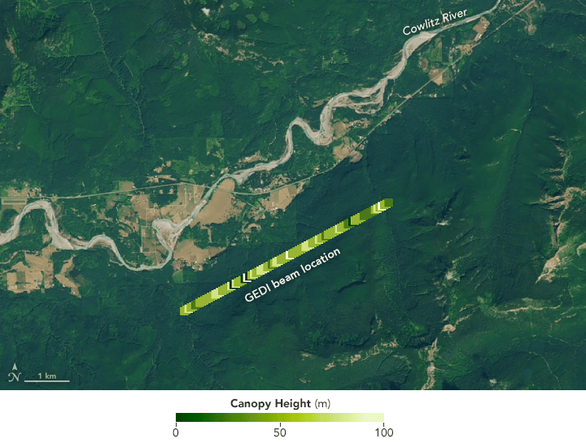

NASA Earthdata · LiDAR explorer
See Earth in elevation.
Find LiDAR observations from GEDI and ICESat-2. Choose an area and date range, then use NASA Harmony to subset the files for your work.

CMR Search
Find LiDAR observations
Search NASA’s Earthdata catalog, then select a collection to see its matching files.
Matching files
NASA Harmony
Subset and download
Check what the collection supports, start a job, and download the files when NASA finishes processing them.